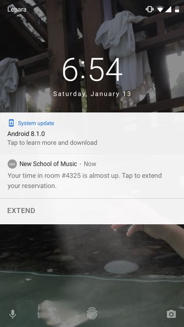
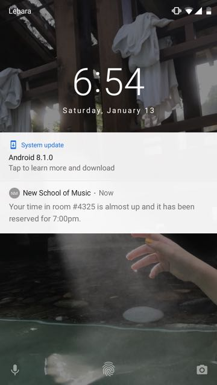

Booking Rehearsal Rooms
Context
A process-focused, speculative, personal project done over the span of 3 days from start to finish.
Prompt: "Your school has built a new student center and is looking to you for some design expertise. Design the reservation experience for students, professors, and/or community members to check availability and reserve one of the music rehearsal spaces within the new center."
Proposal overview
A room booking system, designed for the School of Contemporary Arts at SFU, that is integrated within the overall school app. The post-booking experience also involves a smart lock system at the door to ensure a secure and flexible booking experience.
Behind the scenes
Just to provide some background information on my process - I was doing an internship at Philips Lighting. So I worked 9-5 every day and had to schedule and manage my time accordingly. I finished this project in 18 hours over the span of 3 days.
Dissecting the brief
With every brief I get, I start my process with asking questions to dissect the brief. Here are some of the questions that I asked in the beginning of my process:
1. Who is the primary user of this reservation system?
2. What form/channel could be the most suitable for this journey? Is it a single or a mixed channel experience?
3. If it’s an app, would it just be dedicated to the reservation process? Or would it be a more holistic platform?
User interviews
It’s always important to me to ground my designs in real life scenarios, so after an initial round of ideation I conducted 15 minute interviews with 4 people to ask about their room booking experience — 3 are enrolled in SFU’s contemporary music & composition program, and 1 is an intern at Philips Lighting. Moving forward I decided to scope down the project and design a system that could potentially be implemented for SFU's music department, since I noticed interesting opportunity areas from my interviews.
3 Attributes that I thought the booking system should have based on my research:
User flows + ideation
At this point, I started structuring what the user flow could look like before starting to design screens. This approach allowed me to consider pre and post-booking experience in my design process.
Prototyped wireframes
Now I will take you through the room booking journey step by step, from signing in to the app to unlocking the room's door. I used Sketch for wireframes and Principle for prototyping.
pre-booking — booking — post-booking
Sign in
Main users can log in using their student or faculty number and password - not just for convenience also for security purposes to make sure the rooms are booked by members.
I will take you through the journey from Melissa’s point of view - a composition student studying at SFU. Her goal is to book a room to work on her composition piece.
On the home page, she is able to see her class schedule for the day and the assignments that are due for each class. If she has booked a room, she’ll see it there as well.
pre-booking — booking — post-booking
Start booking
Floating action button will initiate the booking flow. The image placeholder at the top of room cards is for an interior map of the campus as the first image, highlighting where the room is located, as well as a couple of other photos of the room in a carousel.
Insight: One-day & multi-day booking — Through user interviews I found that music students sometimes have a certain piece that they work on for a number of days. Based on that behavior, I implemented a toggle-like feature that lets them book a room for a specific number of days for ongoing rehearsals.
pre-booking — booking — post-booking
Filter rooms
Melissa is able to filter rooms based on parameters such as the time frame, number of people, and available instruments in the room.
Challenge: choice of hiding the the filter elements vs. exposing them — I went through 3 different iterations for the filter design, where I iterated between showing all the filter elements and parameters right above the room cards vs. having an overlay dedicated to them. I decided to go with the overlay since it clusters information better, and having all the filters exposed both pushes the available rooms down the page and is overwhelming at first glance.
pre-booking — booking — post-booking
View a specific room + its schedule
After selecting a room that fits her needs, Melissa can view the room’s schedule for the chosen day. She has the option of changing days, as well as switching calendar view modes.
pre-booking — booking — post-booking
Book the selected room
At this point, she can book the room either through the CTA on the top sticky bar or directly tapping on the time slot. She can also invite other faculty members or students to the group rehearsal.
pre-booking — booking — post-booking
Confirmation email + security code
She gets a confirmation email with the calendar event for the rehearsal as well as a security code that she can enter at the door to unlock it.
pre-booking — booking — post-booking
Unlock door
When Melissa arrives to the room, she can enter the code that she received in her confirmation email to unlock the door. That code is only active during her booked time and will changed for the next person. If there are technical difficulties, she can contact the help number provided on the top right.
Why a smart lock? Based on user interviews, I found that in the current process at SFU, music students are only let in the rehearsal rooms by a security guard. In other words, the security guard needs to leave their room in order to unlock the door with their own keys, since there is only one set of them available. I took this opportunity to propose a system makes the process faster by removing the middleman without compromising security.
pre-booking — booking — post-booking
Spontaneous room booking at the door
Having a tablet installed near the room’s door opens up the opportunity to design a more flexible booking system by providing for another entry point to the booking journey.
When Melissa has a break in between her classes and wants spontaneously book a specific room to practice, she is able to check out the schedule and book a time slot right at the door with her student number.
pre-booking — booking — post-booking
Get notified
The app sends Melissa a push notification to give her a heads up that her booked time is ending soon. If the room isn’t booked, she is able to extend the time directly through the notification.
 Potential next steps
My work strategy is keeping the mock-ups and wireframes low-fidelity as long as possible, because it removes all the distractions and is faster to iterate on. If I were to continue this project, the next step forward would be to test these interactive prototypes and do another iteration at higher-fidelity and based on the testing insights.